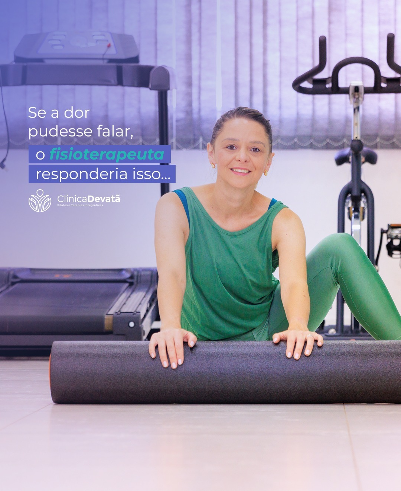
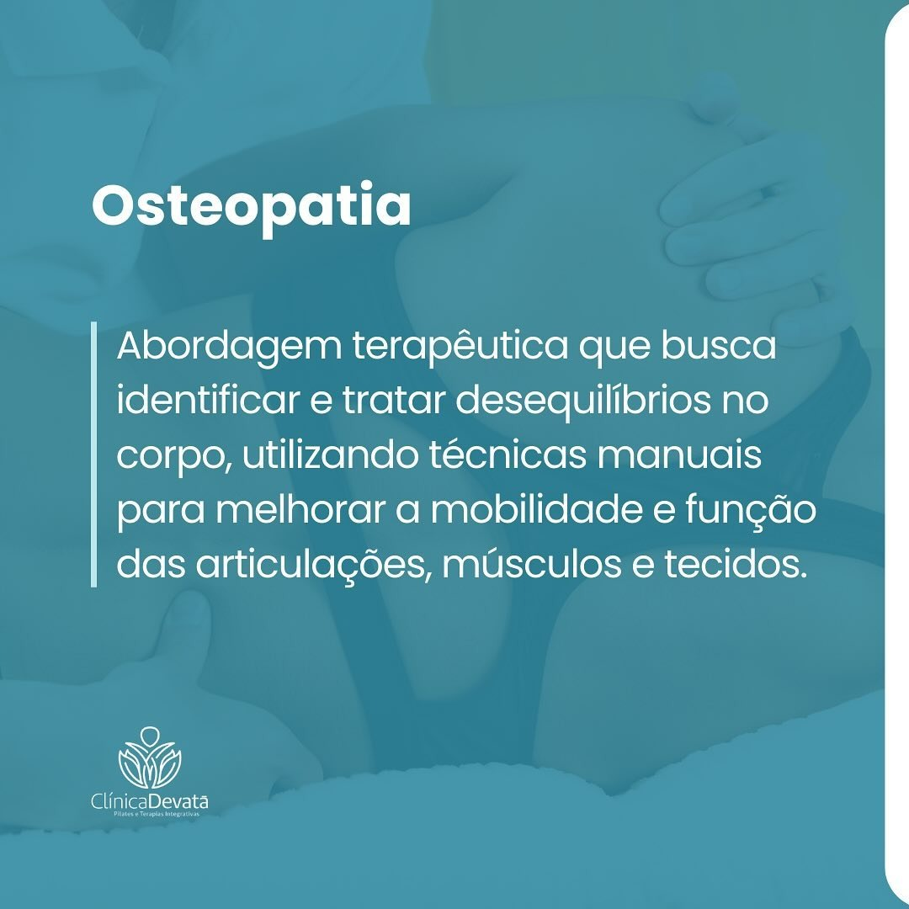
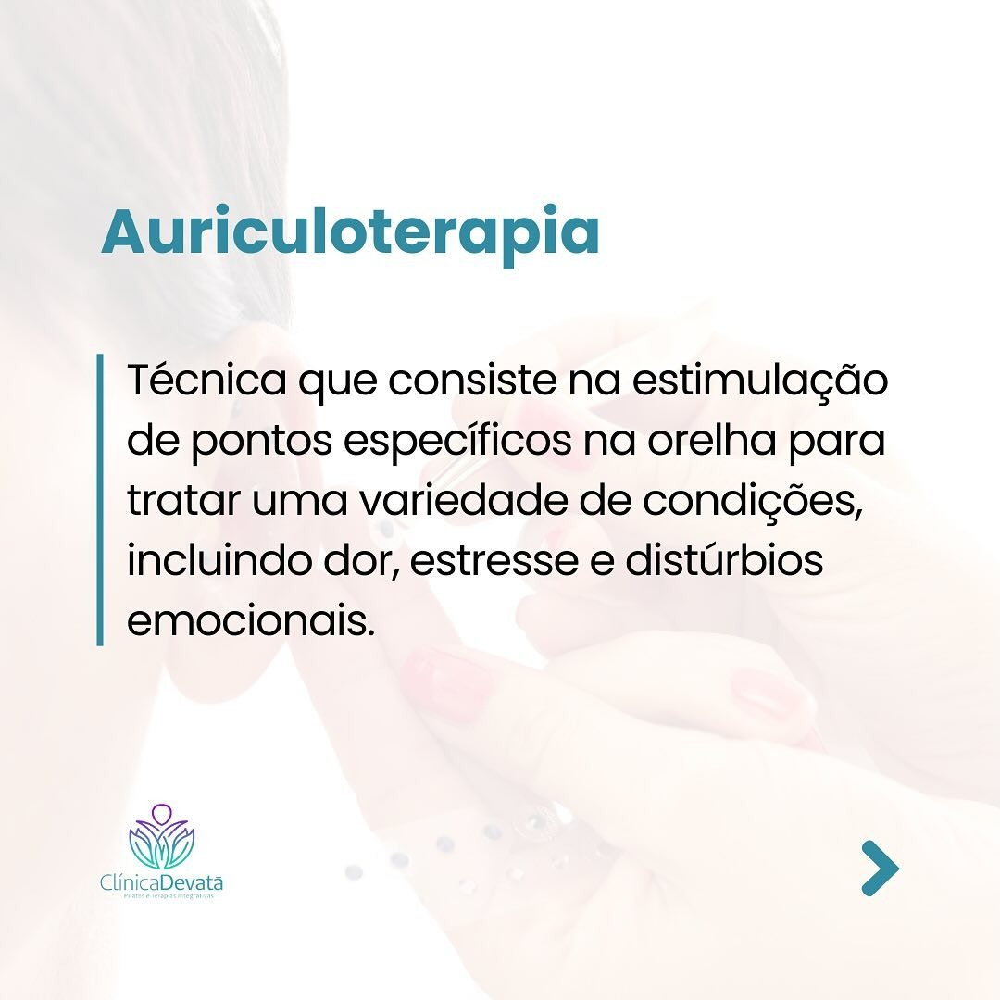
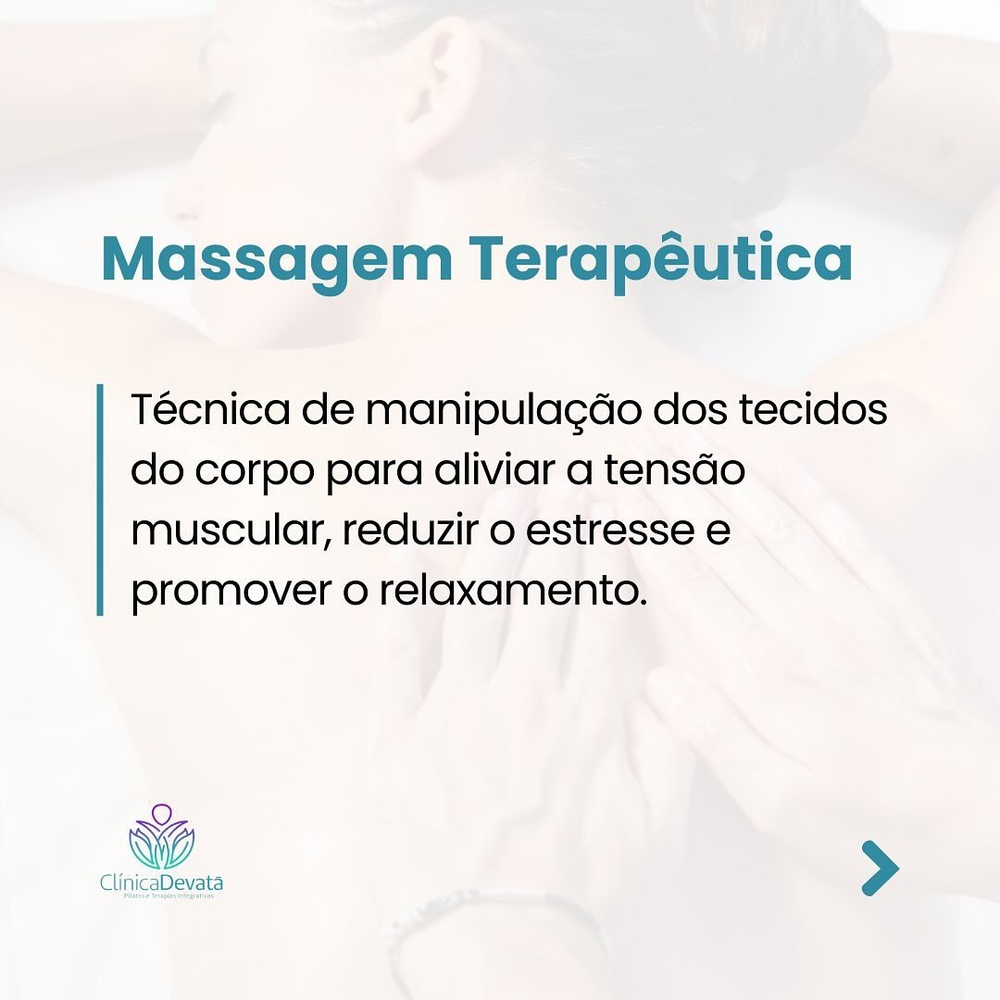

Cadastro Nacional de Estabelecimentos de Saúde vinculado a Videira, SC.
Videira, SC
Fisioterapia para dor e Pilates em Videira.
Cuidado clínico para reabilitação, movimento e bem-estar, com fisioterapia, Pilates e terapias integrativas em um atendimento conduzido com escuta e continuidade.
10+ anos de cuidado
6 frentes terapêuticas
5,0 no Google
Sobre a clínica
Tratamento com escuta, técnica e uma visão integral do corpo.
A Clínica Devatã atua em Videira com foco em dor, reabilitação, Pilates e terapias integrativas. A proposta é olhar para sintomas, rotina, postura e movimento de forma conectada, criando um plano de cuidado mais claro para cada pessoa.
Credibilidade local
Registro público em saúde e presença ativa na comunidade.
A Clínica Devatã aparece em bases públicas de saúde e em ações locais voltadas à promoção de hábitos saudáveis, movimento e qualidade de vida em Videira.
Rua Osvaldo Cruz, 201, endereço encontrado em listagens públicas da clínica.
Local de atividade com Pilates no solo para manejo do estresse e ansiedade em 2026.
Serviços
Tratamentos e práticas oferecidas
Uma jornada que pode começar no alívio da dor e evoluir para força, postura e autonomia.

Dor
Fisioterapia para dor
Avaliação, condução clínica e orientação para entender sinais do corpo e tratar dores persistentes.

Manual
Osteopatia
Técnicas manuais para melhorar mobilidade e função de articulações, músculos e tecidos.

Equilíbrio
Auriculoterapia
Estimulação de pontos específicos na orelha para apoio em dor, estresse e equilíbrio emocional.

Postura
Isostretching
Método que combina respiração, postura e movimento para flexibilidade e consciência corporal.

Relaxamento
Massagem terapêutica
Manipulação dos tecidos para aliviar tensão muscular, reduzir estresse e promover relaxamento.

Movimento
Pilates terapêutico
Movimento orientado para força, mobilidade, respiração e segurança em cada etapa da evolução.
Abordagem
Dor não é apenas um ponto no corpo. É história, rotina e contexto.
A condução combina avaliação, escolha técnica e progressão de movimento para transformar o tratamento em uma experiência clara e sustentável.
O atendimento começa entendendo hábitos, sintomas, limitações e objetivos.
Recursos da fisioterapia e das terapias integrativas são escolhidos conforme a necessidade.
O plano evolui para autonomia, postura, força e retorno seguro às atividades.
Pilates e educação em dor
O movimento certo pode ser parte do tratamento.
O trabalho da Devatã reforça uma ideia essencial: repouso excessivo nem sempre ajuda. Quando bem orientado, o movimento pode reduzir medo, melhorar função e devolver leveza à rotina.
- Atendimento com olhar individualizado
- Exercícios ajustados ao nível de dor e mobilidade
- Integração entre reabilitação, fortalecimento e bem-estar
Depoimentos
Quem passa pela Devatã destaca cuidado, ambiente e resultado.
No Google Business, a Clínica Devatã aparece com nota máxima: 5,0 estrelas em 50 avaliações. Os comentários valorizam atendimento, estrutura, orientação profissional e bem-estar na rotina.
Ver perfil e avaliações no Google
Arejada, ambiente bom com espaço, profissionalismo, acolhedor!
E no trabalho pessoal muito profissional, estão de parabéns!
Profissionais competentes, ambiente tranquilo e exercícios bem orientados.
Dúvidas frequentes
Informações rápidas para quem busca atendimento em Videira
Veja respostas para as principais dúvidas sobre atendimento, localização, horários e serviços da clínica.
A Clínica Devatã atende dor crônica?
Sim. A clínica tem foco em dor, reabilitação e educação em movimento.
Quais serviços a clínica oferece?
Fisioterapia para dor, Pilates, osteopatia, auriculoterapia, isostretching e massagem terapêutica.
Onde fica a Clínica Devatã?
Rua Osvaldo Cruz, 201, Centro, Videira, Santa Catarina, CEP 89560-000.
Como falar com a clínica?
O contato principal é pelo WhatsApp +55 49 98869-2112 ou pelo Instagram @clinica.devata.
Quais são os horários publicados?
Segunda a quinta, das 8h às 20h; sexta, das 8h às 18h. Sábado e domingo aparecem como fechados no Google Business.
A Clínica Devatã tem cadastro público em saúde?
Sim. A clínica aparece no CNES com o código 4877098, em Videira, Santa Catarina.
A clínica participa de ações de saúde e movimento?
Em 2026, a Devatã apareceu como local de atividade de Pilates no solo para manejo do estresse e ansiedade na Semana Catarinense da Medicina do Estilo de Vida.
Contato
Agende uma avaliação na Clínica Devatã.
Atendimento em Videira, SC, com foco em dor, Pilates e terapias integrativas. Para horários, disponibilidade e primeira avaliação, fale diretamente pelo WhatsApp.
- Endereço
- Rua Osvaldo Cruz, 201, Centro, Videira - SC, 89560-000
- +55 49 98869-2112
- @clinica.devata
- Horários
- Segunda a quinta, 8h–20h · sexta, 8h–18h
Centro de Videira
5,0 no Google
Seg–qui · 8h–20h